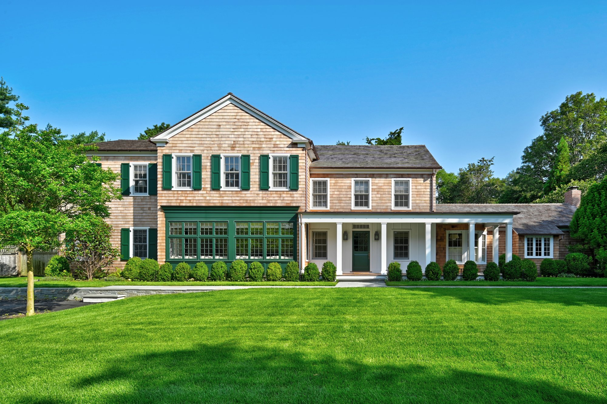
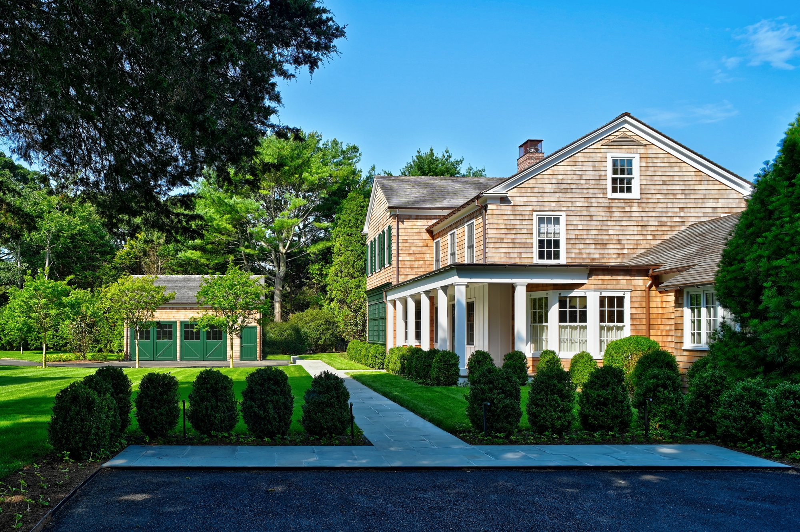
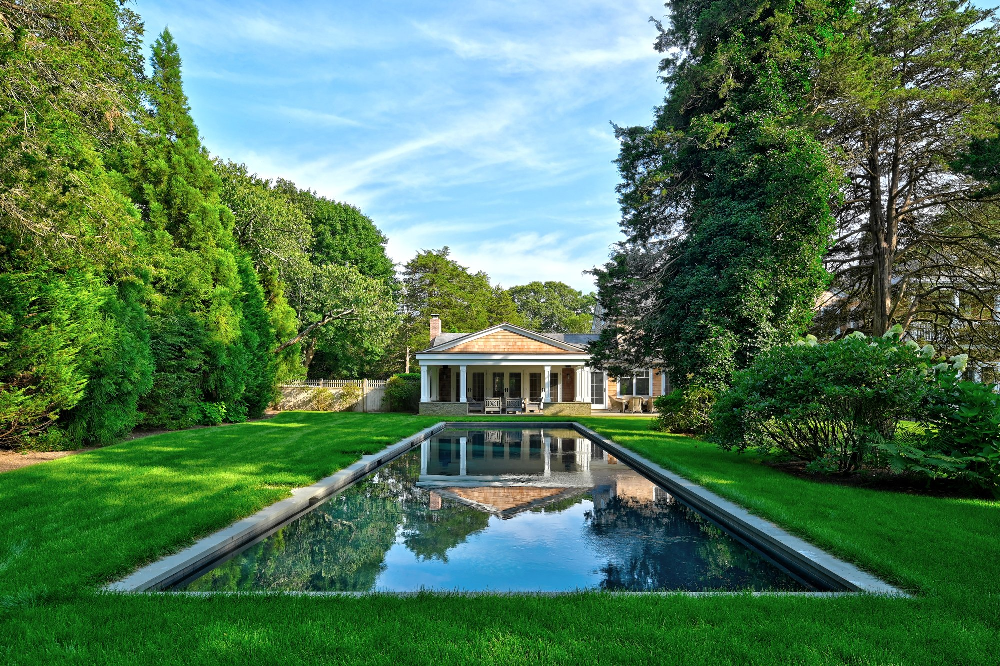

Project Details
A coastal revival on the east end.
Further Lane is a coastal revival residence in East Hampton, designed with careful attention to its relationship with the ocean landscape and the architectural heritage of the Hamptons.
The project is currently under administration. Further details to follow.


